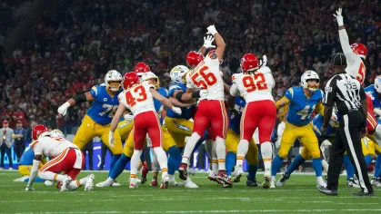
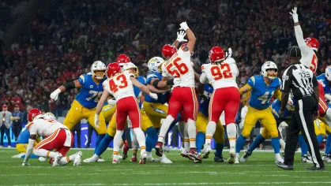
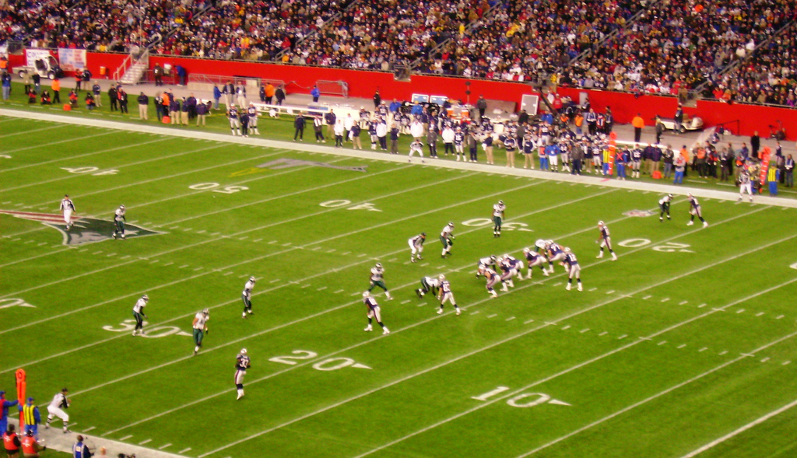
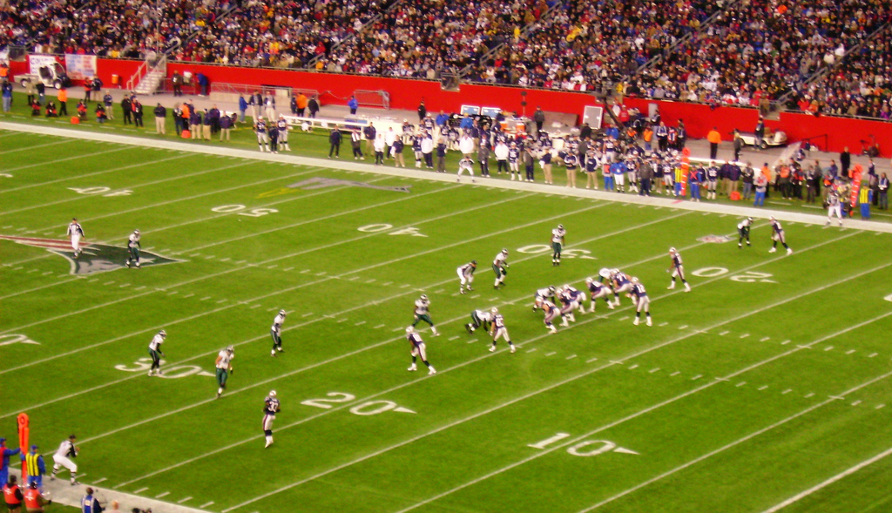

O Futebol Americano nos Estados Unidos
 

 

O futebol americano é muito mais do que um esporte nos Estados Unidos: é parte da identidade cultural do país. A cada temporada, milhões de torcedores se reúnem em estádios ou em frente à televisão para acompanhar os jogos da NFL, considerada a liga mais importante e prestigiada do mundo.
O auge do campeonato é o Super Bowl, um dos eventos esportivos mais assistidos do planeta, que vai além das quatro linhas e se transforma em um verdadeiro espetáculo de entretenimento, com shows, comerciais icônicos e uma audiência global.
Apesar da fama internacional da NFL, o futebol americano também é muito forte no universitário, atraindo multidões e formando atletas que, no futuro, se tornam estrelas profissionais. A rivalidade entre times de universidades é uma tradição que atravessa gerações e movimenta cidades inteiras.
Hoje, o futebol americano não é apenas paixão dos americanos: o esporte vem conquistando cada vez mais fãs ao redor do mundo, inclusive no Brasil, onde o número de ligas e torcedores cresce a cada ano.